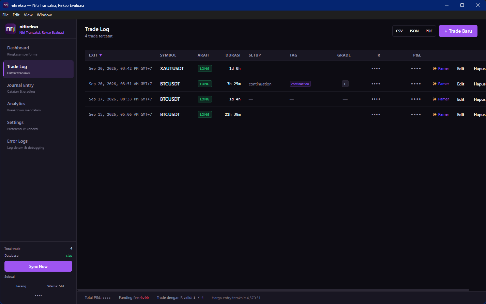
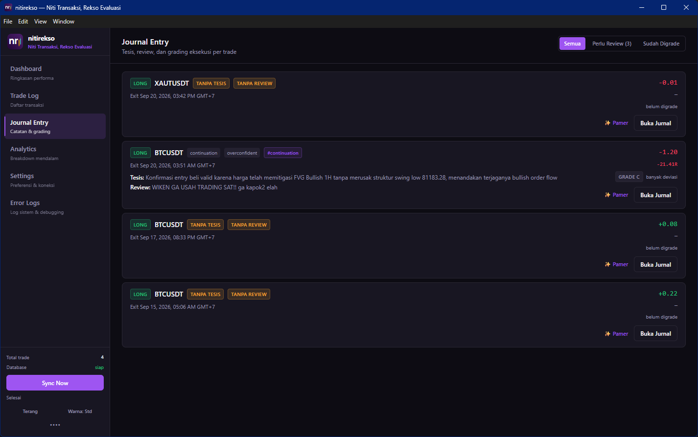
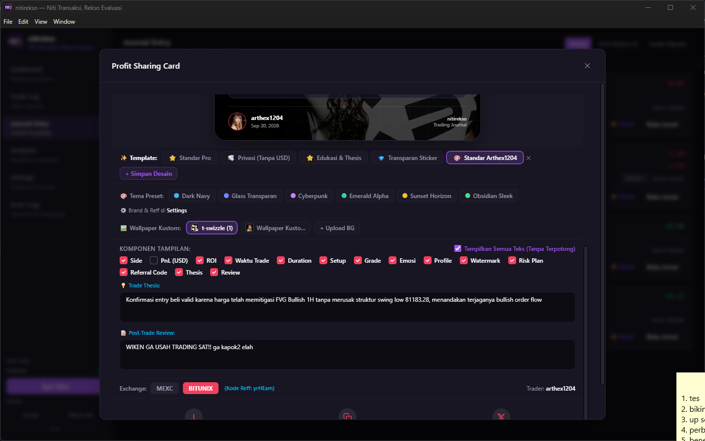

Aplikasi Trading Journal Otomatis &
Analitik Kripto Futures
Tinggalkan kerepotan menyalin harga transaksi di spreadsheet. nitirekso memadukan otomasi sinkronisasi 5 exchange dengan filosofi ketangguhan mental trader:

Terhubung ke 5 Exchange Kripto Terbesar
Sinkronkan histori transaksi futures tertutup, rincian biaya komisi, funding fee, dan saldo margin futures secara otomatis hanya dengan API Key Read-Only.

Bybit
Linear Futures (V5 API)
USDT Perpetual

Binance
USDT-M Futures
Perpetual Contracts

BingX
Swap Perpetual
Standard & Pro

MEXC
USDT-M Futures
Contract Trading

Bitunix
USDT Perpetual
Futures Trading
Eksplorasi Antarmuka Desktop nitirekso
Lihat langsung tampilan antarmuka gelap yang ergonomis, dirancang khusus untuk kenyamanan mata trader saat menganalisis pasar berjam-jam.


Solusi Jurnal Trading Kripto untuk Disiplin Futures
Banyak trader berhenti mengisi jurnal trading kripto karena lelah mengetik ulang data transaksi di spreadsheet. nitirekso menghadirkan otomatisasi jujur dari exchange tanpa kompromi terhadap privasi data keuangan Anda.
Unified Sync 1-Klik Otomatis
Tarik histori posisi tertutup, harga fills rata-rata, komisi, funding fee, dan saldo dompet futures dari 5 exchange dalam 1 klik terpadu. Tanpa salah ketik manual.
100% Offline-First & Privat
Portofolio dan riwayat keuangan Anda adalah privasi mutlak. Tersimpan di database SQLite lokal di komputer Anda, tanpa server perantara, dan tanpa pelacak analitik/telemetri.
Eksekusi vs Hasil (Grade A/B/C/D)
Latih kedisiplinan mental dengan memisahkan kualitas eksekusi dari sekadar PnL. Evaluasi *good loss* yang disiplin dan singkirkan *bad win* hasil keberuntungan semu.
Analitik Mendalam & Preset Cepat
Filter instan Hari Ini, 7H, 30H, Bulan Ini, dan Bulan Lalu. Pantau Equity Curve, Drawdown, Rasio Imbalan R-Multiple, Expectancy (EV), dan Heatmap Kalender interaktif.
Infrastruktur Lengkap untuk Trader Kripto Profesional
Dirancang dari kebutuhan nyata trader futures aktif: dari sinkronisasi multi-exchange hingga generator kartu analitik siap pamer.
1. Integrasi 5 Exchange Futures
Dukungan adapter Read-Only untuk Bybit (Linear V5), Binance (USDT-M), BingX (Perpetual Swap), MEXC, dan Bitunix. Arsitektur idempotent menjamin tidak ada trade duplikat.
2. Unified Sync & Event Bus Global
Sinkronisasi data transaksi dan saldo dompet futures berlangsung serentak dalam satu alur terpadu. Sistem event bus global memastikan seluruh widget saldo dan trade log langsung ter-refresh secara instan.
3. Preset Periode Cepat & Analitik EV
Navigasi filter rentang waktu instan (Hari Ini, 7 Hari, 30 Hari, Bulan Ini, Bulan Lalu). Menghitung otomatis Expectancy / Expected Value (EV), Rasio Imbalan R-Multiple, Profit Factor, dan visualisasi Heatmap Kalender.
4. Studio Share PnL & Share Analytics
Hasilkan kartu performa trading dan laporan analitik visual resolusi tinggi Retina 2x dengan tata letak Bento Grid 8-Slot. Menyajikan Total R, Recovery Factor, Max Streak, Expectancy R, grafik kurva ekuitas adaptif 320px, 6 tema eksklusif, multi-rasio, dan direct share ke X.
5. Jurnal Emosi Pre/Post & SOP Checklist
Catat tesis analisa sebelum open posisi dan evaluasi emosi setelah penutupan posisi. Dilengkapi checklist kepatuhan SOP trading dan penandaan tag emosi seperti #FOMO, #Overtrading, atau #Breakout.
6. Ekspor Serbaguna & Multi-Platform
Ekspor catatan jurnal ke dokumen PDF beresolusi tinggi, format CSV siap olah, atau sinkronkan backup database ke Google Drive. Tersedia untuk Windows (installer tanpa hak Admin), macOS (M-Series & Intel), dan Linux.
nitirekso vs Software Jurnal Trading Berbayar vs Spreadsheet
Lihat mengapa nitirekso adalah pilihan aplikasi jurnal trading kripto paling masuk akal bagi trader yang memprioritaskan privasi dan efisiensi.
| Fitur & Karakteristik | nitirekso Desktop (v1.5.3) | SaaS Cloud Berbayar | Google Sheets / Excel |
|---|---|---|---|
| Dukungan Exchange Kripto | 5 Exchange (Bybit, Binance, BingX, MEXC, Bitunix) | Terbatas (Perlu biaya langganan add-on) | Tidak ada (Ketik manual satu per satu) |
| Biaya Langganan | Gratis Selamanya (Lisensi MIT) | $30 – $50 / bulan ($360 – $600/tahun) | Gratis |
| Penyimpanan Data & Privasi | 100% Offline-First (SQLite Terenkripsi Lokal) | Cloud Provider (Rentan bocor / dilacak) | Cloud Google / Lokal tanpa enkripsi |
| Unified Sync (Trade & Saldo) | Otomatis 1-Klik via Read-Only API | Otomatis via API / CSV (Sinkron terpisah) | Manual (Ketik harga, fee, & saldo satu per satu) |
| Keamanan API Kredensial | Enkripsi Windows DPAPI / Keychain Lokal | Tersimpan di Cloud Server Pihak Ketiga | Kredensial terbuka di spreadsheet |
| Evaluasi Disiplin vs Hasil | Execution Grade (A/B/C/D) & Tag Emosi | Bervariasi (Umumnya hanya PnL nominal) | Perlu buat kolom & rumus sendiri |
| Studio Pamer PnL & Analytics | Retina 2x (6 Tema, 3 Rasio, Watermark & Ref) | Kartu statis terbatas tanpa opsi tema | Screenshot tabel biasa |
| Dukungan Sistem Operasi | Windows (Tanpa Admin), macOS, & Linux | Web Browser saja | Software Office |
Frequently Asked Questions (FAQ)
Semua hal yang perlu Anda ketahui mengenai keamanan API, cara kerja sinkronisasi, dan instalasi nitirekso.
Apakah menghubungkan API Bybit, Binance, BingX, MEXC, dan Bitunix ke nitirekso aman?
safeStorage) atau sistem keychain aman lokal OS.
Apa itu fitur Unified Sync di nitirekso dan mengapa lebih unggul daripada spreadsheet?
Apakah ada biaya langganan bulanan tersembunyi?
Apa maksud dari pemisahan Execution Grade (A/B/C/D) dengan hasil PnL?
Apakah data histori trading saya disimpan di server cloud pihak ketiga?
Bagaimana cara kerja fitur Studio Kartu Pamer PnL & Share Analytics?
Bagaimana cara menginstal nitirekso di Windows, macOS, atau Linux?
nitirekso (ꦤꦶꦠꦶꦫꦼꦏ꧀ꦱ)
"Niti Transaksi, Rekso Evaluasi"
ꦤꦶꦠꦶ Niti
Memiliki arti menulis, mencatat, memeriksa, dan meneliti secara saksama. Dalam dunia trading, tidak ada kemajuan tanpa pencatatan data riwayat transaksi yang jujur dan presisi atas setiap keputusan market tanpa celah bias emosi.
ꦫꦼꦏ꧀ꦱ Rekso
Memiliki arti menjaga, merawat, dan memelihara. Menjaga modal (capital preservation) dan merawat kedisiplinan mental adalah fondasi mutlak agar trader mampu bertahan dan berkembang secara konsisten dalam jangka panjang.
Unduh nitirekso Desktop v1.5.3
Pilih paket instalasi resmi sesuai sistem operasi perangkat Anda. 100% bebas biaya langganan, tanpa registrasi akun luar, dan siap pakai.
Paket Installer Resmi Windows
Mendukung Windows 10 & Windows 11 (64-bit). Dioptimalkan untuk instalasi mandiri di ruang pengguna (*User-level*) tanpa meminta prompt Administrator.
Installer mandiri NSIS dengan auto-updater terintegrasi. Instalasi cepat & bersih.
%LOCALAPPDATA%\Programs) dan seluruh database riwayat transaksi Anda tersimpan di %APPDATA%\nitirekso.
Paket Disk Image Resmi macOS
Mendukung macOS Monterey, Ventura, Sonoma, dan Sequoia. Tersedia binary native untuk Apple Silicon dan Intel.
Binary native ARM64 berperforma tinggi dan hemat daya untuk MacBook & Mac modern.
Paket berkas disk image native untuk perangkat Mac berbasis prosesor Intel x64.
.dmg dan seret ikon nitirekso ke folder Applications. Pada pembukaan awal, jika muncul pemberitahuan pengembang, klik kanan aplikasi > pilih Open.
Paket Resmi Linux (AppImage & DEB)
Mendukung berbagai distribusi Linux populer seperti Ubuntu, Debian, Fedora, Arch Linux, Linux Mint, dan Manjaro.
Format portabel universal mandiri tanpa perlu dependensi rumit. Langsung jalankan di distro mana pun.
Paket instalasi terintegrasi menu aplikasi desktop untuk sistem berbasis Debian, Ubuntu, dan Mint.
chmod +x nitirekso-*.AppImage && ./nitirekso-*.AppImage